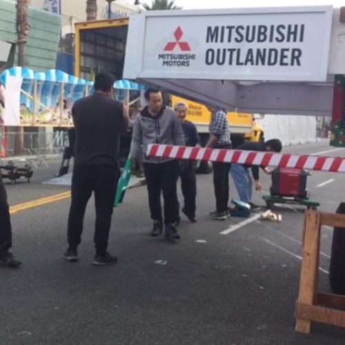
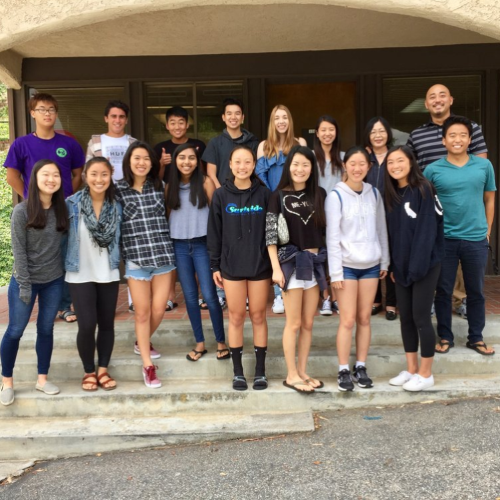
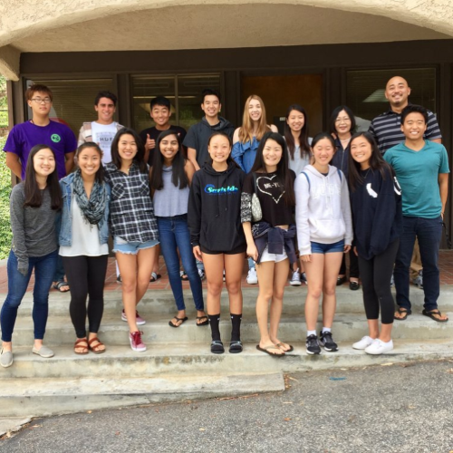
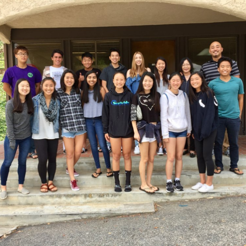

Lillica Miki
As a current pre-business major, I aim to be accepted into The School of Business at the University of California Riverside. I have strengths both academically and socially which enable me to maintain a steady path towards this goal and potentially reach it by 2021. With a concentration in Accounting, I hope to graduate from the university with a bachelor’s degree and extensive knowledge about the business world. Once graduating, I aspire to become a Certified Public Accountant by passing the CPA exam and work under one of the Big Four Accounting firms. Additionally, during my four years at the university, I hope to be able to establish as many partnerships with businesses and complete a few internships to expand my knowledge.
During my high school years, I worked part-time for a tutoring center for over four years. I became a veteran employee, teaching newer employees the ropes and working multiple positions in the center. Through this, I was able to gain valuable experience that enhanced my interpersonal communication, time management, and overall social skills. I am able to work in high-paced environments, both independently and with others, and can easily adapt to most situations. I am also well versed in using computing software such as Excel and other necessary programs due to experience from high school as well as university classes. Furthermore, I am able to stay organized and maximize my efficiency so that the work outputs are steady and constant.
In addition to my work experience, I also partake in several volunteer activities. During high school, I was in the American Red Cross Club for over 3 years. Currently, I am involved with the Japanese Business Association of Southern California and volunteer at a series of their events yearly. This includes volunteer work at the Los Angeles Marathon, Nisei Week parades in both Little Tokyo and Hollywood, and many more. From 2008, I have consecutively volunteered for these events and am able to showcase support for my culture along with observing business individuals to learn from their actions. By being active in volunteer work, I have had the opportunity to create new connections with various individuals as well as urge myself to work towards improving my community even further. I strive to highlight my community as well as others through my passion and work in the business industry.
Experience
Tutor
• Over 4 years of work experience
• Operated front desk, worksheet distribution, and teaching
• Experience working with kids and parents alike
Red Cross Volunteer
• Certified in CPR
• Volunteer work at blood drives
• Organized food drives
Nisei Week Parade Volunteer
• Aid in the creation of parade decorations
• Handing out supplies and food
• Showcasing of Japanese culture
Education
University of California Riverside
Portfolio


 

